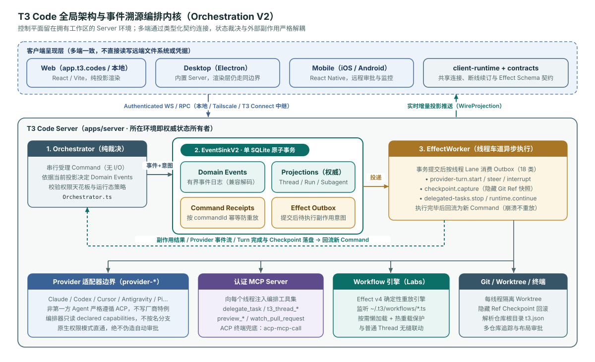
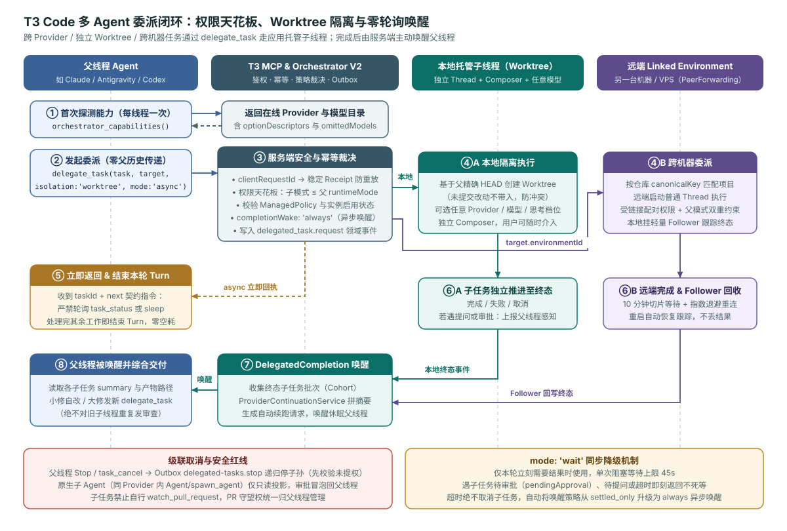
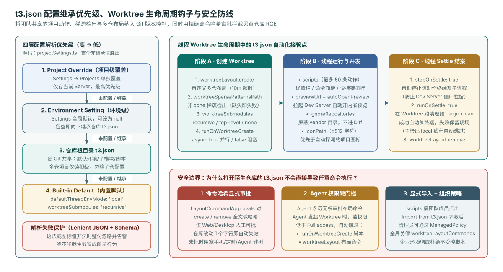
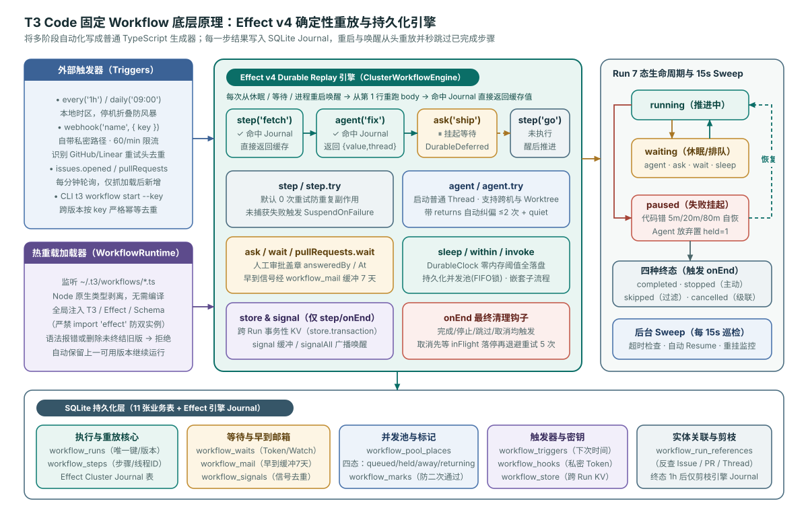
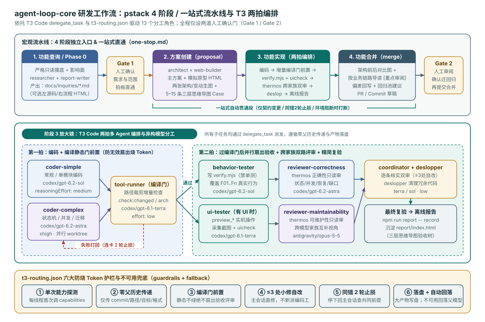
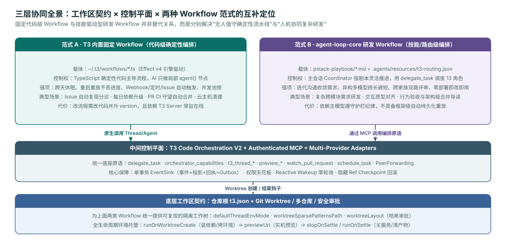

T3 Code 深度解析：多 Agent 编排、t3.json、固定 Workflow 与 agent-loop-core 实践
基于 pingdotgg/t3code（main@b9728422）与 agent-loop-core（main@852d9b7 / 7842337）最新源码，系统拆解 T3 Code 如何用事件溯源控制平面统一驾驭十余种 Coding Agent，剖析 t3.json 的工作区契约、基于 Effect v4 的代码级固定 Workflow 引擎，以及 agent-loop-core 仓库构建在其上的 4 阶段研发工作流与运行时 Core Loop。
事件溯源 + 异步 Outbox 编排内核
Orchestrator 纯内存裁决无 I/O，EventSinkV2 在单 SQLite 事务提交事件、投影、幂等回执与 Outbox 意图，EffectWorker 按线程车道执行副作用并回流。
双层子 Agent + 零轮询 Reactive 唤醒
同 Provider 走原生子 Agent；跨模型、独立 Worktree 或跨机器走 delegate_task 应用托管子线程，严守权限天花板，终态通过 DelegatedCompletion 自动唤醒父线程。
t3.json 四层继承 + 哈希安全审批
仓库根级配置统一声明建树/结案脚本、稀疏检出、多仓过滤与自定义布局；所有布局命令须经人工按原文哈希审批，杜绝陌生仓库 RCE。
代码级固定重放 × 技能级研发流水线
T3 内置 ~/.t3/workflows/*.ts 用 Effect v4 确定性重放跑无人值守长流水线；agent-loop-core 用 pstack + t3-routing.json 编排 13 角色跨家族研发。
一、T3 Code 全景与事件溯源内核
很多开发者初看 T3 Code，会误以为它是另一个套壳 IDE 或 API 代理商。阅读源码后可以得出明确结论：T3 Code 的本质是一个开源、多端一致、远程就绪的 Coding Agent 控制平面（Control Plane）。它不转售 Token，而是直接驱动你本机或远端服务器上已登录的 CLI Agent——覆盖 Claude Code、Codex、Cursor、OpenCode、Grok Build、Antigravity、Kiro、Pi、Muse Code、fx 以及任何严格遵守 ACP（Agent Client Protocol）的代理，并将它们统一映射到 Web、Electron Desktop 和 iOS/Android 移动端的同一套线程视图中。
1.1 控制平面与所有权边界
T3 Code 在架构上最克制的一条铁律是：执行权与状态权威永远留在拥有工作区的 Server 环境（docs/internals/01_architecture.md）。即使 Electron 桌面端自带了内置 Server，它的前端渲染进程也必须通过认证 RPC 与 Server 通信，绝不允许远程客户端用自己的文件系统、凭据或本地时钟去替代环境事实。
| 层次 / 目录 | 核心职责 | 关键设计约束 |
|---|---|---|
apps/server |
状态权威与执行宿主：托管 Provider 进程、终端、Git Worktree、隐藏 Ref Checkpoint、SQLite 持久状态与项目文件。 | 所有业务能力先写成 Effect 服务方法，再暴露给 RPC、MCP 与定时/工作流，避免逻辑散落在路由 handler 中。 |
packages/client-runtime |
Web、Desktop、Mobile 共享的连接管理与领域状态投影，统一处理断线重连、增量同步与多环境路由。 | UI 只负责“哑渲染”，线程结案（settlement）和运行态全部以服务端持久化事实为准。 |
packages/contracts |
基于 Effect Schema 的类型化线缆契约，支撑不同版本客户端与服务端安全互通。 | Socket 认证不等于全量授权，每个受保护 RPC 与 MCP 工具按细粒度权限范围二次鉴权。 |
packages/provider-* |
将各家 Agent 原生协议翻译为统一事件流的适配器边界（ProviderAdapterV2 / provider-acp）。 |
编排器只读能力声明，绝不按 Provider 名字写分支；不伪造缺失权限模式（绝不靠自动点同意假装 Full access）；非第一方 ACP 代理零厂商特例。 |
1.2 Orchestration V2：纯裁决与异步 Outbox
支撑多端同步、多 Agent 并发和崩溃恢复的心脏，是位于 apps/server/src/orchestration-v2/ 的事件溯源编排内核。它把一次用户或 Agent 的操作拆成清晰的三段式流水线：
- 1纯裁决（
Orchestrator.ts）：串行接收Command，仅依据内存/存储中的当前投影决定要产生的领域事件与副作用意图，裁决路径内严禁任何外部 I/O。 - 2单事务原子落盘（
EventSink.ts）：在同一个 SQLite 事务内同时写入四样东西——有界领域事件（Domain Events）、权威读模型（Projections）、按commandId索引的幂等回执（Command Receipts）以及待执行意图（Effect Outbox），提交完成后才向 WebSocket 订阅者推送增量帧。因此，收到命令确认只代表“意图已持久化”，绝不代表 Provider 回合或 Checkpoint 已经完成。 - 3线程车道异步执行（
EffectWorker.ts&EffectOutbox.ts）：事务外按线程 Lane 消费 18 类 Outbox Effect（包括provider-turn.start、provider-turn.steer、checkpoint.capture、delegated-tasks.stop、provider-runtime.continue等），外部执行完成后再以新 Command 回流内核。进程崩溃重启时，绑定在已消失 Provider 进程上的旧 Effect 会被安全退役而不是盲目重放。

为什么“回合完成”与“Checkpoint 落盘”要拆成两个里程碑？
当 Provider Turn 结束时，Run 立刻记为 completed，避免前端时长条虚增或卡在“运行中”；随后的 checkpoint.capture 作为 Outbox Effect 将工作区快照写入隐藏 Git Ref（refs/t3/...，绝不给用户分支塞脏 Commit）。但在快照提交完成前，命令裁决层仍把该 Run 视为 waiting，从而让后续 steer、排队消息和回滚自然排在快照之后。更严谨的是：如果某个 Provider 无法回滚对话历史，T3 会在动文件系统之前直接拒绝回滚请求。
二、多 Agent 编排机制
T3 Code 最吸引重度工程用户的能力，并不是“同时开十个聊天框”，而是让一个主 Agent（例如 Claude Code 或 Antigravity）在执行任务的过程中，按需把子任务精准派发给另一个 Provider、另一种模型、另一档思考预算、一个全新隔离的 Git Worktree，甚至远端另一台 VPS 机器，并在所有子任务结束后自动被唤醒汇总。
2.1 两类子 Agent 的本质分工
在 T3 Code 的编排提示词（packages/provider-core/src/server/orchestrationInstructions.ts）与用户文档（docs/user/subagents.md）中，子 Agent 被严格划分为两种截然不同的实现路径：
| 维度 | Provider 原生子 Agent（Native Subagent） | T3 托管委派子 Agent（App-Owned Delegated） |
|---|---|---|
| 启动方式 | 由底层 CLI 内部拉起（Claude Agent 同步调用、Codex spawn_agent、Cursor / Antigravity / fx / Pi 原生能力）。 |
父 Agent 调用 T3 注入的 MCP 工具 delegate_task。 |
| 底层实体 | 归属父会话进程内部，T3 仅做只读事件投影（isProviderNativeSubagentThread）。 |
在 T3 Server 中创建一条真实受控的子 Thread（relationshipToParent: "subagent"），有独立 childThreadId 与输入栏。 |
| 跨模型 / 隔离能力 | 锁定同 Provider，无法跨模型家族，无法自动新建隔离 Git Worktree，不能后台脱管。 | 可任选另一 Provider/模型/思考参数（target.options）、指定 isolation: "worktree" 或跨机器 target.environmentId。 |
| 人机交互与审批 | 子视图只读，审批请求冒泡到父线程处理（带子 Agent 名字）。 | 子线程完全可交互，用户可直接打开右侧面板或主视图向子 Agent 追问、干预或审批。 |
| 适用场景 | 同 Provider、同配置内的轻量只读并行探索。 | 跨家族代码评审、高并发并行改代码（Worktree 隔离）、后台异步子任务、跨机器委派。 |
2.2 delegate_task 端到端闭环与零轮询唤醒
翻开 apps/server/src/mcp/OrchestratorMcpService.ts（delegateTask，L2927–3115）与 packages/contracts/src/orchestratorMcp.ts，可以看到 T3 Code 在多 Agent 编排上解决了五个最容易踩坑的工程难题：
- ① 首次能力探测（
orchestrator_capabilities）：每个线程在第一次委派前调用一次，拿到所有在线providerInstanceId、模型列表、各模型专属选项描述符（optionDescriptors，例如 Codex 的reasoningEffort与 Antigravity 的thought_level）以及被折叠的omittedModels计数（可用search参数补查）。如果目标模型不可用，规则明确禁止 Agent 擅自静默切模型或退回 CLI，必须如实上报。 - ② 零父历史传递与幂等受理：
delegate_task只向子线程传递显式taskbrief，绝不复制父线程冗长的聊天记录，从源头避免上下文膨胀和噪声污染。同时通过clientRequestId生成稳定commandId并查CommandReceiptStoreV2，网络抖动重试不会误拉起两个重复子 Agent。 - ③ 权限天花板（Runtime Mode Ceiling）：权限从低到高分为
approval-required<auto-accept-edits<auto<full-access。服务端resolveRuntimeMode硬性拒绝任何高于父线程权限的子任务请求；连取消操作task_cancel都会递归校验assertStoppable——如果用户在子线程里人工把权限提得比父线程还高，父 Agent 就无权擅自强停它。 - ④ 精确 Commit 的 Worktree 隔离：传入
isolation: "worktree"时，服务端解析父检出当前精确的HEADcommit SHA（若分支指针仍指着该 commit 则沿用分支名），以startFromOrigin: false创建干净工作树；父目录未提交的脏改动不会带入子工作树，彻底隔离并行写入冲突。 - ⑤ Reactive Wakeup（彻底消灭轮询空耗）：这是 T3 Code 编排中最值得借鉴的设计。默认
mode: "async"会把唤醒策略设为completionWake: "always"，立刻返回taskId和一条硬契约字段next：
Completion wakes this thread. Do not wait on it or poll it. Continue other work, and end your turn when none is left.
父 Agent 发起并行子任务后，干完手头剩下的事就可以直接结束本轮 Turn 释放模型连接；当子任务进入终态（完成 / 失败 / 取消），内核会把同批次终态归入 DelegatedCompletionCohort，由 ProviderContinuationService 组装完成摘要并自动发起续跑，精准唤醒父线程进入下一轮综合。只有在“本轮必须立刻拿到结果”时才用 mode: "wait"（阻塞上限 45 秒），一旦子任务触发提问（hasPendingQuestion）、待审批（pendingApproval）或 45 秒超时，调用会立刻返回且绝不取消子任务，同时把唤醒策略自动升级为异步 always。

DelegatedCompletion 异步唤醒父线程。 查看大图2.3 跨机器编排、ACP 兜底与线程工具边界
当 delegate_task 的 target 里带上 environmentId 时，调用会切入 apps/server/src/peer/RemoteDelegation.ts。主环境通过 PeerForwarding 在远端机器上按 Git 仓库 canonicalKey 自动匹配对应项目（无需手工查远端路径），在远端启动一条普通 Thread，并在本地为这条开放的远端任务挂载一个轻量 follower：每次仅读取该单条任务记录（防止父线程有上千历史任务时重启撑爆堆内存），按 10 分钟切片等待、遇断网按 2 秒指数退避至 5 分钟重连，重启后自动恢复追踪；一旦远端完成，照样唤醒本地父线程。
而在异构 CLI 兼容方面，T3 Code 还藏着一招极为务实的 ACP Fallback（orchestrationInstructions.ts:60）：有些第三方 ACP Agent 虽然接受了 T3 注入的 MCP Server 配置，却不把 MCP 工具暴露给模型。T3 会在环境里注入 T3_ACP_MCP_NODE，指导 Agent 直接在终端跑 acp-mcp-call delegate_task '{...}'，让“半残”协议的 Agent 依然能完整融入多 Agent 编排网。
| 编排原语 / 工具组 | 核心职责 | 关键约束（防误用红线） |
|---|---|---|
delegate_task / task_cancel |
派发受控子任务、级联中止子孙任务。 | 新评审或复查必开新 delegate_task，禁止向旧子线程发 t3_thread_send；停止子任务必用 task_cancel，禁止直接 t3_thread_interrupt。 |
t3_thread_launch / create_threads |
创建新的顶层独立线程（支持指定 workspaceStrategy）。 |
仅在用户明确要求“开新线程”时使用，“subagent / delegate / parallel”绝不等于开顶层线程。 |
t3_thread_transfer |
在线程之间做上下文 fork 或 merge_back。 |
默认从 latest_stable 稳定点复制上下文，不自动开跑新 Turn。 |
watch_pull_request |
持续监听 PR 的 CI 失败/必检通过/新评审/冲突并唤醒线程。 | 子 Agent 无权开启 PR Watch，必须由父线程统一看管；一次开启持续生效，唤醒不是自动合并授权。 |
schedule_task |
创建单提示词的定时（interval/fixed_time/once）或 Webhook 任务。 | Webhook URL 仅创建时返回一次，适合单轮定期动作；多阶段状态流转请用固定 Workflow。 |
request_secret |
向用户弹出安全单行卡片收集密码/Token/sudo，返回一次性 secretRef 或临时文件。 |
凭据不进入聊天记录，不落入模型上下文。 |
三、t3.json 的内容、继承链与安全防线
如果说 Orchestration V2 解决了“Agent 怎么协同”，那么放在仓库根目录的 t3.json 解决的就是：“团队里任何人（或任何子 Agent）在 T3 Code 里打开这个仓库、新建 Worktree 时，环境怎样做到开箱即一致，又不会把打开仓库变成 RCE 漏洞？”
3.1 四层配置继承优先级
依据 packages/contracts/src/t3ProjectFile.ts 与 packages/shared/src/projectSettings.ts，t3.json 声明的仓库级配置参与 T3 Code 清晰的四层继承链（首个非继承值胜出）：
- Project override：用户在
Settings → Projects中针对单个项目做的显式覆盖（最高优先级，仅存于当前 Server）。 - Environment setting：当前 Server 的全局默认设置（在 Schema 中对文件支撑项允许为
null，设为null即表示向下继承）。 - 仓库根目录
t3.json：随 Git 版本库共享给所有协作者。多仓库项目仅读取项目根目录的t3.json，嵌套子仓库内部的t3.json会被刻意忽略。 - Built-in default：内置兜底值（目前
PROJECT_FILE_BACKED_SETTINGS包含两项：defaultThreadEnvMode = "local"与worktreeSubmodules = "recursive"）。
解析器使用 fromLenientJson(T3ProjectFile)（支持尾逗号/注释等宽松 JSON，同时强校验 Effect Schema），并且导出标准 JSON Schema（https://t3.codes/schema/t3.json，带 onExcessProperty: "error" 严格拒绝未知字段）。一旦仓库里的 t3.json 语法或 icon 枚举非法，T3 会整份忽略并在项目设置页显示明确错误提示，绝不半截解析。
3.2 顶层字段与脚本生命周期钩子
对照 t3ProjectFile.ts（L26–156）与官方文档 docs/user/t3-json.md，t3.json 目前全部 8 个顶层字段与 scripts 子项定义如下：
| 字段名 | 类型 / 取值 | 核心作用与工程细节 |
|---|---|---|
$schema |
string |
指向 https://t3.codes/schema/t3.json，为编辑器提供自动补全与静态校验。 |
iconPath |
相对路径（≤512 字符） | 指定项目图标（如 assets/logo.svg），优先级高于 T3 自动扫描的 favicon。 |
defaultThreadEnvMode |
"local" | "worktree" |
新线程默认在主目录工作还是自动拉起独立 Git Worktree。 |
worktreeSubmodules |
"recursive" | "top-level" | "none" |
控制新 Worktree 如何初始化子模块；设为 "none" 可交由 setup 脚本按需初始化。 |
worktreeSparsePatternsPath |
相对路径（≤512 字符） | 指向 Git non-cone 格式稀疏检出规则文件（如 .t3/sparse-checkout，需 Git 2.35+）。从目标分支读取，若文件缺失直接让建树失败，防止巨型 Monorepo 误全量检出。 |
ignoreRepositories |
string[] |
在多仓库项目中排除特定子仓库路径（如 ["vendor/big"]），不纳入 Diff 审查，也不为其建 Worktree。 |
worktreeLayout |
{ create, remove? } |
单命令 ≤4096 字符、10 分钟超时、按项目串行执行；接管多仓或带共享构建缓存的自定义工作树创建与拆除，注入 6 个标准 T3_WORKTREE_* 环境变量，且要求幂等（分支已存在时可重入）。 |
scripts |
数组（最多 50 项） | 团队共享的项目动作菜单，支持 runOnWorktreeCreate、async、previewUrl、autoOpenPreview、stopOnSettle、runOnSettle 完整生命周期钩子。 |
其中 scripts 的生命周期设计尤其贴合多 Agent 并行开发的真实痛点：新拉一个 Worktree 时，runOnWorktreeCreate: true 自动拷 .env、装依赖；默认 async: true 让 Agent 不必傻等 pnpm install 就能立即开始读代码（若必须等环境就绪再设为 async: false）。跑开发服务器时可配 previewUrl + autoOpenPreview: true 自动在桌面端弹出内嵌预览，并加上 stopOnSettle: true，等线程结案（settle）时自动杀掉终端和子进程防止端口泄漏；还可以补一条 runOnSettle: true（例如 cargo clean），在独立 Worktree 结案时自动清理动辄数 GB 的构建产物（成功自动关终端、失败留着排查，在 local 主检出中自动跳过）。
{
"$schema": "https://t3.codes/schema/t3.json",
"iconPath": "assets/dev/blueprint-web-apple-touch-180.png",
"scripts": [
{
"name": "Dev",
"command": "vp run dev",
"icon": "play",
"stopOnSettle": true
},
{
"name": "Setup Worktree",
"command": "node scripts/setup-worktree.ts",
"icon": "configure",
"runOnWorktreeCreate": true
}
]
}pingdotgg/t3code/t3.json（main@b9728422）：建 Worktree 时后台自动跑环境初始化，线程结案时自动关停 Dev 服务。{
"$schema": "https://t3.codes/schema/t3.json",
"iconPath": "assets/logo.svg",
"defaultThreadEnvMode": "worktree",
"worktreeSubmodules": "top-level",
"worktreeSparsePatternsPath": ".t3/sparse-checkout",
"ignoreRepositories": ["vendor/big"],
"scripts": [
{
"name": "Setup",
"command": "pnpm install --frozen-lockfile",
"icon": "configure",
"runOnWorktreeCreate": true,
"async": false
},
{
"name": "Dev",
"command": "pnpm dev",
"icon": "play",
"previewUrl": "http://localhost:3000",
"autoOpenPreview": true,
"stopOnSettle": true
},
{
"name": "Clean Build",
"command": "cargo clean",
"icon": "build",
"runOnSettle": true
}
]
}{
"$schema": "https://t3.codes/schema/t3.json",
"worktreeLayout": {
"create": "(git worktree add \"$T3_WORKTREE_PROJECT_PATH\" \"$T3_WORKTREE_BRANCH\" 2>/dev/null || git worktree add -b \"$T3_WORKTREE_BRANCH\" \"$T3_WORKTREE_PROJECT_PATH\" ${T3_WORKTREE_BASE:-HEAD}) && git -C \"$T3_WORKTREE_PROJECT_PATH\" submodule update --init",
"remove": "./scripts/remove-workspace.sh"
}
}T3_PROJECT_ROOT、T3_WORKTREE_ROOT、T3_WORKTREE_PROJECT_PATH、T3_WORKTREE_BRANCH、T3_WORKTREE_BASE、T3_WORKTREE_REPOSITORIES。3.3 命令哈希审批与防 RCE 边界
既然 t3.json 提交在 Git 仓库里，攻击者完全可能在一个开源 PR 里塞进恶意 worktreeLayout.create 或 runOnWorktreeCreate。T3 Code 在 apps/server/src/workspace/LayoutCommandApprovals.ts 与 TaskFolders.ts 中布下了三道硬防线：
- 精确原文哈希审批：
worktreeLayout的create和remove字符串会按精确内容哈希登记审批（要求操作者在 Web/Desktop 持有terminal:operate权限）；只要仓库里改了一个字符，旧审批立刻作废，移动端、定时任务和 Agent 都会被阻塞。 - Agent 权限硬门槛：Agent 永远无权审批布局命令；且当 Agent 主动发起 Worktree 创建时，只要权限低于 Full access，
runOnWorktreeCreate脚本与worktreeLayout都会被自动跳过。 - 显式导入与企业策略总开关：普通
scripts需用户手动点击 “Import from t3.json” 才生效；管理员还可通过ManagedPolicy里的worktreeLayoutCommands彻底禁用所有仓库级自定义布局命令。

t3.json 四层继承优先级、Worktree 全生命周期自动化钩子及三道防 RCE 安全边界。 查看大图四、固定 Workflow 的底层原理
理解 T3 Code 的自动化体系，首先要分清三个层次，不要混用：
- 动态多 Agent 委派（
delegate_task）：流程由大模型临场规划，适合探索性研发任务；但步骤顺序不固定，遇到跨天等待或进程重启很难保证精确续跑。 - 定时/Webhook 任务（
schedule_task）：单条 Prompt 定时或被 Webhook 触发，适合轻量周期巡检，但没有多阶段状态机。 - 固定 Workflow（Labs ·
~/.t3/workflows/*.ts）：面向高确定性、长周期、不可丢进度、不可重复产生副作用的多阶段流水线（例如Issue 触发 → Agent 复现 → 人工拍板 → Worktree 修复 → 等待 CI → 自动合并 → 销毁临时机器）。
另外需要避开一个命名歧义：T3 MCP 工具里有一个 t3_workflow_stop，它仅用于停止 Claude Code 自身的原生子工作流进度；而真正的 T3 持久化固定 Workflow 引擎位于 apps/server/src/workflows/，外部通过 CLI（t3 workflow ...）、Web/Desktop 的 Workflows 面板或专用外部 MCP 工具 t3_workflow（对普通线程默认隐藏以省上下文，见 toolkits/workflow/tools.ts:74）来驱动。
4.1 Effect v4 确定性重放（Deterministic Replay）与 6 条铁律
阅读 apps/server/src/workflows/workflow.ts（1208 行）与 WorkflowEngine.ts（1385 行）会发现一个非常硬核的事实：T3 Code 并没有写一套简陋的 YAML DAG 解析器，而是直接在本地 SQLite 上跑起了 Effect v4 的 ClusterWorkflowEngine（SingleRunner 模式）——架构思想与 Temporal / Restate 一脉相承，却无需外挂任何中间件，且未启用 Labs 或无定义文件时按需懒加载、零启动开销。
它的核心运行原理可以用一句话概括：“体函数从头重放，已完成原语查 Journal 秒跳过。”
一个 Workflow 本质上是一个 TypeScript 生成器函数 Effect.fn(function* (payload, run) { ... })。每当某次 Run 因为 sleep("wait-2d", "2 days")、ask(...)、agent(...) 挂起，或者服务器意外断电重启后重新唤醒时，引擎都会从第 1 行重新执行整个函数体。代码每走到一个具名原语（底层包装为 Activity.make 或 DurableDeferred），引擎就去持久化 Journal 查询该步骤名是否已有完成记录：命中则直接返回上次落盘的 JSON 结果（绝不重新调外部 API 或重跑 Agent），直到推进到第一个尚未完成的原语才真正执行。
正因为基于确定性重放，编写 T3 Workflow 必须严守 6 条源码级铁律（skills/t3-workflows/SKILL.md:361）：
- 所有副作用必须包进原语：I/O、读系统时钟、生成随机数、读写
store或调用 GitHub/Linear API 必须放在step或agent里；原语之间的普通 JS 代码必须是纯确定性逻辑。 - 步骤名即 Journal Key：同一 Run 内，跨所有原语种类（
step/agent/ask/wait/sleep/invoke/pullRequests.wait）的名称必须全局唯一（claim()强制校验，重复即Effect.die）。循环体必须带索引（如`check-${i}`）；保留名onEnd与前缀@pool:禁止占用。 - 变更线上逻辑必须递增
version：engineTag由`${name}@${version}`构成。如果旧版还有未终结的 Run，严禁修改其步骤顺序或返回 Schema，而要注册更高version并把旧版保留在文件里直到旧 Run 全部结束。WorkflowRuntime.ts热重载时会自动拦截“删掉仍有未完成 Run 的旧版”或“重复注册同名同版本”的改动，保留上一版继续跑；若强行缺失则标为retired: true。 - 零
import "effect"+ 全局注入：WorkflowRuntime.ts利用 Node 原生类型剥离（Type Stripping）直接加载.ts文件，仅将T3 / Effect / Schema / Option / Duration / Schedule注入globalThis（配合AsyncLocalStorage+Semaphore(1)+ 20 秒加载超时隔离）。严禁文件内手动import "effect"，否则会加载出第二套运行时实例导致引擎无法识别。 - 全量 JSON Schema 序列化校验：所有 Payload 与 Step 返回值都经 Effect Schema 编码为 JSON（并通过
finiteNumbersAST 改写显式拒掉NaN/Infinity），不可序列化会在写入 Journal 前立刻判该步骤失败。 - 默认 0 次重试（防重复副作用）：
DEFAULT_RETRY = { times: 0 }。源码注释一针见血：“a step that posts or merges must not do it again after a lost reply”。只有幂等操作才显式传retry: { times: 3, schedule: Schedule.exponential("2 seconds") }。
4.2 核心原语、7 态状态机与持久化并发池
T3 Code 为 Workflow 作者提供了一套极度凝练的 DSL（通过 const { ... } = T3 解构使用），同时用 Workflow.SuspendOnFailure 注解实现了独特的“失败即挂起、恢复续断点”语义——普通 step 或 agent 失败时，Workflow 函数体里无法 try/catch，引擎会直接把整个 Run 置为 paused 保护现场；想在代码里捕获失败走降级分支，必须显式调用 step.try 或 agent.try 将失败转为数据。
| 原语 | 核心行为与工程设计细节 |
|---|---|
step / step.try |
执行任意代码并将结果记入 Journal；失败后默认按 resumeAfter: ["5m", "20m", "80m"] 由 15s Sweep 自动退避恢复（也可随时人工 t3 workflow resume）。 |
agent / agent.try |
启动或续跑一条普通 T3 Thread（支持 workspace、model、environment、returns、timeout、quiet），详拆见下节。 |
ask |
向 Workflows 页「Needs you」发多选人工审批卡片（支持分类 kind、附加链接、强制填理由 requireReason）；服务端通过 answerStamped 覆写防伪的 answeredBy 与 answeredAt，丢弃调用方伪造字段。 |
wait |
挂起等待外部信号（按 { runId, wait } 精确寻址或按 { workflow, channel } 频道寻址）。若信号比 wait 更早到达，会先存入 workflow_mail 表默认缓冲 7 天，开等瞬间自动投递，彻底消除竞态丢信号。 |
sleep |
调用 DurableClock.sleep 且硬设 inMemoryThreshold: Duration.zero——哪怕睡 1 秒也落盘，重启绝不重新计时。 |
pullRequests.wait |
挂起等待 PR 达到 checks（全部检查落停）、merged 或 closed，由 Sweep 每分钟轮询一次并自动记录 PR 关联引用。 |
invoke |
同步调用另一个 Workflow 作为子 Run 并等待其终态（子 Run 暂停时父 Run 继续等待；取消父 Run 会级联取消子 Run）。 |
within / concurrency |
全 Server 跨 Run / 跨 Workflow 共享的持久化并发池与互斥锁（limit: 1 即锁）。通过 PoolsHeld 检测同池嵌套死锁；挂起时立刻归还名额（away），恢复时置为 returning 优先插队拿回全部原名额才继续重放。 |
store & signal |
仅允许在 step / onEnd 内调用：提供跨 Run 事务性 KV（store.transaction / entry.update）及 signal（可缓冲）/ signalAll（广播不缓冲）。 |
onEnd |
统一清理钩子（completed / stopped / skipped / cancelled 均执行，paused 不执行）。不共享 body 局部变量，靠 run.id 命名外部资源；取消时会先 inFlight.settled 等在途步骤退出，再按 5m / 20m / 80m / 5h 最多重试 5 次。 |

4.3 agent() 步骤的工程细节与 SQLite 持久化层
在 apps/server/src/workflows/workflowAgent.ts（663 行）中，T3 Code 把“不确定性的 AI Agent”极其优雅地嵌进了“确定性的重放引擎”里，有四处细节堪称教科书级别：
- 外置 Watch Fiber，绝不卡死引擎热重载：早期如果把“等 Agent 跑完”直接放在
Activity里阻塞，整个 Workflow 引擎就无法优雅卸载重载。现行实现把一次 Turn 等待拆成“写入workflow_waits.watch_json+ 启动独立seeTurnFiber 监听 +DurableDeferred.await”；服务器重启或热重载时，15 秒 Sweep 会扫描所有未闭合的watch_json自动重新接管监控。 - 强类型结构化输出 + 自动纠偏（最多 2 轮）：如果
agent()传了returns: Schema.Struct(...)，T3 要求 Agent 调用t3_submit_output提交符合 JSON Schema 的数据。若回合结束却未提交或校验失败，引擎不会重做任务，而是在同一条 Thread 里最多追加 2 次精准纠偏提示（CORRECTIONS = 2），要求它直接补交结果。 quiet宽限期兼容跨轮等待：有些 Agent 在步骤里需要开 PR Watch 等 CI 跑 30 分钟，中途会先结束当前 Turn。配置quiet: "45 minutes"后，线程空闲满 45 分钟还没交结果才催交，避免刚挂上 PR 监控就被误判为漏交输出。- 差异化重试与
held = 1保护：如果 Agent 进程意外崩溃（died），引擎先重试停掉可能残留的旧 Turn（防幽灵改代码），再自动在干净线程重试 1 次；但如果 Agent 正常跑完却拒绝给结果、超时或被人工 Stop，系统把 Run 标记为paused且held = 1，禁止自动resumeAfter无限烧 Token，必须等人工介入核查后手动resume（反之，如果是远端离线导致根本没启动，则视为普通步骤失败允许自动退避重试）。
支撑整套机制落盘的是 Migrations/110_Workflows.ts 与 118_WorkflowPools.ts 建立的 11 张 SQLite 业务表（叠加 Effect Cluster 自身的 Journal 表）：workflow_runs（含 UNIQUE(workflow, idempotency_key) 实现跨版本按 Key 去重，终态 1 小时后仅剪枝底层 Journal 保留业务行供审计）、workflow_steps（记录每个步骤关联的 thread_id / turn_id，取消时精准只停该 Turn）、workflow_waits、workflow_mail（早到信号邮箱）、workflow_signals（信号 ID 去重）、workflow_marks、workflow_triggers、workflow_hooks（私密 Hook Token）、workflow_store、workflow_run_references（按 Issue/PR/Thread 反查关联 Run）和 workflow_pool_places（并发池 FIFO 队列）。
4.4 端到端具体示例：新 Issue 自动复现、审批、修复到合并
下面用一个覆盖 issues.opened、within 并发池、agent（带强类型 returns）、ask 人工审批、pullRequests.wait 与 onEnd 的真实范例，走一遍重放引擎的全链路状态跳变：
const { workflow, title, subject, agent, ask, step, within, stop, issues, pullRequests, Issue } = T3;
const Repro = Schema.Struct({
reproduced: Schema.Boolean,
rootCause: Schema.String,
});
const FixPr = Schema.Struct({ prUrl: Schema.String });
export default workflow(
"issue-autopilot",
{
version: 1,
payload: Issue,
concurrency: 4,
asks: { approveFix: "批准自动修复？" },
triggers: [issues.opened({ project: "/home/dev/app", labels: ["bug"] })],
onEnd: (issue, end) =>
issues.comment(issue, `流水线 ${end.id} 结束：${end.outcome} ${end.reason ?? ""}`),
},
Effect.fn(function* (issue) {
yield* title(`${issue.displayKey} ${issue.title}`);
yield* subject(issue);
// 1. 只读复现（返回强类型 Repro，自动链接 Issue）
const repro = yield* agent("reproduce", {
project: "/home/dev/app",
issue,
brief: `只读复现 ${issue.url}，严禁修改文件，定位根因后提交结果。`,
returns: Repro,
timeout: "30 minutes",
});
if (!repro.value.reproduced) return yield* stop("未能稳定复现");
// 2. 人工拍板（进入 Needs you 收件箱，最多等 2 天）
const decision = yield* ask("approve", {
kind: "approveFix",
title: `已复现 ${issue.displayKey}，是否派 Agent 在 Worktree 修复？`,
choices: ["fix", "hold"],
data: repro.value,
timeout: "2 days",
});
if (Option.isNone(decision) || decision.value.choice !== "fix") {
return yield* stop("人工暂缓修复");
}
// 3. 受并发池限流（最多 2 个构建同时跑）在隔离 Worktree 修复并提 PR
const pr = yield* within(
"builders",
{ limit: 2 },
agent("fix", {
project: "/home/dev/app",
workspace: { type: "worktree", baseRef: "origin/main", startFromOrigin: true },
runtimeMode: "full-access",
brief: `基于根因「${repro.value.rootCause}」修复 ${issue.url}，通过测试并开 PR。`,
returns: FixPr,
timeout: "2 hours",
}),
);
// 4. 挂起等待 PR Checks 落停（可跨数小时，重启不丢）
const standing = yield* pullRequests.wait(
"ci",
{ project: "/home/dev/app", url: pr.value.prUrl },
{ until: "checks", timeout: "2 hours" },
);
if (Option.isNone(standing) || standing.value.state !== "open" || standing.value.checks !== "passing") {
return yield* stop("CI 未通过或 PR 已关闭");
}
// 5. 确定性代码合并（step 默认 0 重试防重复操作）
yield* step("merge", { returns: Schema.Void }, pullRequests.act({ project: "/home/dev/app", url: pr.value.prUrl }, "merge"));
return { mergedPr: pr.value.prUrl };
}),
);T+00:00 issues.opened 轮询发现新 bug #412 → 生成幂等键 trigger:issue-autopilot/.../#412 → Run 进入 running
T+00:01 命中 concurrency=4 池（@pool:issue-autopilot）获位 → 启动 agent("reproduce") 子线程 → Run 切 waiting
T+00:08 复现 Agent 调 t3_submit_output 提交合法 Repro → 结果写入 Journal → Run 唤醒重放，秒过 reproduce
T+00:08 执行 ask("approve") → 写 workflow_waits（deadline=+2d）→ Run 切 waiting，手机端弹出「Needs you」
T+14:00 次日开发者在手机点击 "fix"（期间即使服务器重启过 2 次也不受影响）→ 服务端盖章 answeredBy/At
T+14:00 Run 唤醒并从第 1 行重放：title/subject/reproduce/approve 全部命中 Journal 秒跳过！
T+14:00 进入 within("builders", limit:2)：若已有 2 个修复在跑则入 workflow_pool_places 排队（status: waiting）
T+14:05 获得 builders 名额 → 在 origin/main 新 Worktree 跑 agent("fix") → 交出 FixPr 后释放名额
T+14:32 pullRequests.wait("ci") 挂起，Sweep 每分钟查一次 checks → 全部变绿后唤醒 Run
T+14:48 重放跳过前 4 步 → step("merge") 合并 PR → 执行 onEnd 在 Issue 留言结案 → Run 进入 completed五、agent-loop-core 中的 Workflow 实践
理解了 T3 Code 原生的多 Agent 编排与代码级固定 Workflow 后，再来看本地实际运行的 agent-loop-core（Super Agent）仓库，就会发现一层极具启发性的对照：agent-loop-core 既是一个用 Go 自研的 Agent Runtime + MyGo 五大平级 Agent 桌面客户端，同时它自身的研发流程就是一套直接运行在 T3 Code 多 Agent 编排原语之上的固定工程 Workflow（pstack-playbook + t3-routing.json）。
5.1 pstack-playbook 4 阶段交付与一站式流水线
在 agent-loop-core 中（commit 7842337，2026-11-24 落地），所有研发任务告别了“一口气让一个大模型盲改代码”的随性模式，统一收敛为位于 .agents/skills/pstack-playbook/ 的 4 大主流程 + 1 条一站式直通流水线，并将所有研发文档交付物规范落盘到 docs/：
| 阶段 / 剧本 | 边界与核心纪律 | 标准交付物与落位 | 关键质量机制 |
|---|---|---|---|
1. 功能查询1-inquiry.md |
严格只读，零业务代码改动，固定 commit 基线，历史原因按需追查。 | docs/inquiries/YYYY-MM-DD-<topic>.md（明确要求时出离线 HTML） |
强制包含 1 个端到端具体例子、架构/流程图与 [源码] 行号证据；HTML 必带“左源码 / 右流程点击直达”。 |
2. 方案创建2-proposal.md |
不区分新功能与 Bug；先查后聊、迭代收敛，严禁跳过确认直接编码。 | docs/requirements/<topic>/README.md + prototype/index.html + assets/ |
离线原型必须标明 [模拟交互] 且右区透视后端状态/DB/日志；功能验收 Case 用三层思维导图组织（5–15 条可控可审计）。 |
3. 功能实现3-implementation.md |
按已确认方案编码，偏差必须登记回写；严守 X-TEST-01 禁函数级单元测试。 |
代码变更 + verify.mjs + report/index.html 离线报告 |
T3 两拍编排：先过路径裁剪增量编译门，再并行扇出 verify.mjs/uicheck、thermos 跨家族双路评审与 deslop 精简。 |
4. 功能合并4-merge.md |
帮助人类无黑盒审阅 AI 改动；停在确认门，未经人工拍板禁止迁脚本或合并。 | docs/requirements/<topic>/merge-guide.md + assets/architecture-diff.png |
禁止按文件名流水账罗列 diff，必须按“入口 → 裁决 → 持久化 → 适配”串讲并标 [重点审阅]，逐条给出回归池沉淀建议。 |
一站式开发one-stop.md |
把 2 → 3 → 4 串为自动贯通流水线，全程只设 Gate 1（需求确认）与 Gate 2（合并确认）。 | 贯通交付方案/原型、代码、verify.mjs、离线报告与合并导读 |
仅在 3 种例外下中途打断：需改外部契约、同错连卡 2 轮止损、遇不可逆或环境阻断。 |
这套 Workflow 里有两项极富特色的工程反直觉设计：第一是 X-TEST-01 禁单测 + 行为级三层思维导图验收——不让 AI 堆砌脆弱的函数级 Mock 单元测试（那只会锁死重构且制造虚假安全感），而是要求把验收收敛为 5–15 条人眼可审阅的外部可观察 Case（F01..Fn），在 verify.mjs 里启动真实编译产物验证并沉淀进 npm run report 离线思维导图报告；第二是编译门前置的两拍编排——阶段 3 先由轻量模型跑路径裁剪后的增量检查（check:changed / check:boundaries / check:arch），编译和静态门未绿前严禁并行拉起昂贵的高思考评审与行为测试，直接从流程结构上砍掉浪费的 Token。
5.2 t3-routing.json：13 角色异构模型路由与 6 条护栏
为了把上述 4 阶段流程真正绑定到 T3 Code 的编排原语（orchestrator_capabilities、delegate_task、task_status、task_cancel），agent-loop-core 设计了机器可读配置 .agents/resources/t3-routing.json 与配套规范 t3-routing.md。它只启用 codex 与 antigravity 两个 Provider（禁用 claudeAgent），把 5 款能力与成本梯度分明的模型精准分配给 13 个角色：
| 角色名 | 适用阶段 | 默认路由（Provider / Model） | 思考档位 | 职责与设计意图 |
|---|---|---|---|---|
coordinator |
1 / 2 / 3 / 4 | 沿用主对话模型（parent_thread） |
沿用主对话 | 全局编排、迭代沟通、逐条核实双审发现、偏差登记与 ≤3 处小修自改。 |
researcher |
1 / 2 | 浅层 codex/gpt-6.1-terra深挖 antigravity/claude-opus-5-5 |
low / high |
只读查代码、追踪调用链（pstack-how）与影响面（pstack-blast-radius）。 |
architect |
2 | antigravity/claude-opus-5-5 |
high |
复杂技术方案、状态归属与提交边界定型、pstack-arena 候选对比与分层 Case 导图。 |
report-writer |
1 / 2 / 4 | antigravity/gemini-4-neon |
medium / high |
发挥长文结构化表达优势，撰写问询文档、主方案与按业务链路串讲的合并导读。 |
web-builder |
1 / 2 / 4 | codex/gpt-6.2-sol |
medium / high |
生图脚本、离线交互原型 prototype/index.html 与左右对照源码导览 HTML。 |
coder-simple |
3 | codex/gpt-6.2-sol |
medium |
步骤清晰的单模块常规编码、生成物同步与简单 Bug 修复。 |
coder-complex |
3 | 主 codex/gpt-6.2-astra备 antigravity/claude-opus-5-5 |
xhigh / high |
跨包状态机、并发事务边界、崩溃恢复与 Schema 迁移；并行多路时切 worktree 隔离。 |
tool-runner |
3 | codex/gpt-6.1-terra |
low |
第一拍守门员：低成本跑路径裁剪增量 tool 检查并收口报错位置。 |
behavior-tester |
3 | codex/gpt-6.2-sol |
medium |
按方案 F01..Fn 编写并执行 verify.mjs，输出结构化 JSON 汇入离线报告。 |
ui-tester |
3 | codex/gpt-6.1-terra |
low / medium |
驱动真实浏览器（preview_* + Computer Use）点检界面并跑 npm run uicheck。 |
reviewer-correctness |
3 | codex/gpt-6.2-astra |
high / xhigh |
pstack-thermos 正确性只读评审：状态转换、失败恢复、幂等与验收缺口。 |
reviewer-maintainability |
3 | antigravity/claude-opus-5-5 |
high |
pstack-thermos 可维护性只读评审：跨模型家族互补，交稿前两路互不可见。 |
deslopper |
3 | 轻 codex/gpt-6.1-terra化简 codex/gpt-6.2-sol |
low |
pstack-deslop 清理 diff 中多余注释、重复判断与无职责包装，不改外部契约。 |
配套的 fallback.policy: "inherit_parent" 保证任何路由模型不可用或触发限流时平滑回落至主对话模型并在交付摘要中显式披露；而 guardrails 中的 6 条防烧 Token 护栏（单次能力探测、零父历史传递、编译门前置、≤3 处小修主会话直改、同错连续 2 轮止损转「共同前提检查」、大产物直接写盘只回报摘要与路径）则直接把 T3 Code 编排的最佳实践固化成了团队纪律。

agent-loop-core 的 pstack 4 阶段 / 一站式流水线与阶段 3 T3 Code 两拍 13 角色编排全景。 查看大图5.3 真实案例与 agent-loop-core 运行时 Core Loop 对照
这套工作流并非纸上谈兵——2026 年 11 月 26 日刚在 agent-loop-core 上跑完的 feat/mygo-ui-experience-upgrade（MyGo 五大平级 Agent 桌面端体验升级）就是一个完整的实测样本（见 docs/requirements/mygo-ui-experience-upgrade/merge-guide.md）：
- 改动规模与方案纪律：共改
mygo-workspace/46 个既有文件（+1886 / -707行，严格遵守X-TEST-01新建 0 个*_test.go）；实现期产生的 4 处合理调整（D01–D04）全部显式登记并回写主方案。 - 跨家族
thermos双审的真实战果：codex/gpt-6.2-astra与antigravity/claude-opus-5-5两路独立评审一口气揪出 7 项 P1 问题——其中最典型的一例是D04：评审发现若直接比较Conversation.Revision > ViewedRev，保存会话级配置递增版本号会让已看完的会话重新变成“未读”；主会话核实后改为在终态事务额外写terminal-rev:<id>，零 Schema 迁移根治缺陷。 - 行为探针与 Gate 2 收口：无窗探针通过
//go:build uiprobe构建标签彻底隔离出生产二进制，verify.mjs跑通 14/14 条功能 Case（实测 80 行长会话渲染p50 ~9ms / p95 ~11ms，50 条 CLI delta 批合为 4 次 SQLite 事务）并写入离线报告轮次004；最终在 Gate 2 停下，给出 12 条建议迁入长期回归池、2 条随需求留档的清单等待人工拍板。
延伸视角：agent-loop-core 自身 Go Runtime 的 Core Loop 与 T3 Code 编排内核的惊人共鸣
如果往 agent-loop-core/go-runtime/ 内部再看一层，它自身的 Agent Core Loop（CONTEXT.md、go-runtime/README.md、docs/requirements/subagent-orchestration/README.md）与 T3 Code 的 OrchestrationV2 在底层架构上不谋而合：二者都坚持“业务状态在 SQLite 短事务内由纯裁决器（ThreadDecider / Orchestrator）更新，模型与 Shell 在事务外通过 Effect 循环执行”、都按 requestId / commandId 做幂等回执、都禁止把外部结果未确认（unknown）的动作盲目自动重放。差异在于领域建模粒度：T3 Code 的托管子 Agent 是一条可独立交互的子 Thread；而 agent-loop-core 的 Delegation 坚持不建新 Thread，而在同一 Thread 内建 task-owned 子 Conversation，并严格分离“子任务执行终态”与“报告投递 Delivery 状态”，同时在 Run 之上抽象出带共享预算与独立完成审核的 Goal 持续目标循环。
六、双范式对比与组合选型指南
把 T3 Code 内置的固定 Workflow、agent-loop-core 的 pstack 研发 Workflow，以及自由多 Agent 委派放在同一张坐标系里比较，各自的适用边界立刻一目了然：
| 比较维度 | 自由多 Agent 委派 delegate_task |
T3 内置固定 Workflow ~/.t3/workflows/*.ts |
agent-loop-core 研发流pstack + t3-routing.json |
|---|---|---|---|
| 流程控制权 | 父 Agent 模型动态临场决定。 | 确定性 TypeScript 代码强控制，AI 只是局部 agent() 节点。 |
主会话 coordinator 按 Markdown 剧本与 JSON 路由表半结构化推进。 |
| 持久化与重启恢复 | 线程与子任务状态持久化，但父逻辑不带代码级重放检查点。 | Effect v4 完整 Journal 重放，支持跨天休眠、自动退避与精确断点续跑。 | 依赖落盘文档产物（方案/报告/导读）做阶段级断点衔接，无框架级重放。 |
| 触发方式 | 人在对话中触发。 | 定时（every/daily）、Webhook、新 Issue/PR 自动轮询、CLI。 |
人在 T3 Code 聊天框点名剧本阶段或“一站式开发”。 |
| 人机协同模式 | 随时介入子线程或处理审批。 | 通过 ask() 进入「Needs you」收件箱异步多选拍板。 |
Gate 1 多轮需求对齐 + Gate 2 代码导读与回归池拍板。 |
| 修改与迭代成本 | 零成本，改一句提示词即可。 | 需改 TS 代码并递增 version，保留旧版至旧 Run 结束。 |
极低，直接改 .agents/ 下 Markdown 与 t3-routing.json 即时生效。 |
| 最佳适用场景 | 一次性调研、临时并行对比或跨机排查。 | 无人值守的运维/CI/Issue 自动分诊、每日依赖巡检、跨天发布流水线。 | 高复杂度软件工程交付（方案 → 编码 → 行为验收 → 跨家族双审 → 合并导读）。 |

t3.json 管好隔离环境与安全门，中层 T3 控制面统一调度与唤醒，顶层按确定性需求选用代码级 Workflow 或技能级研发流。 查看大图当前工程边界与实操注意点
1. 固定 Workflow 依赖 Server 常驻在线：目前为 Labs 功能（需开 Settings → Labs → Workflows），挂起的 Run 与定时触发只有在启动它的 T3 Server 在线时才会推进。
2. 多仓库 t3.json 仅认根目录：嵌套子仓库的 t3.json 不会被合并；自定义 worktreeLayout 每次修改命令字符串后需在桌面/Web 端重新审批。
3. 技能级 Workflow 依赖模型纪律：pstack 的 6 条防烧 Token 护栏由提示词与工具规则软约束，面对较弱主模型时仍可能出现漏探测或提前扇出，因此 coordinator 应优先选用遵循指令能力强的主模型，把确定性红线（如 X-TEST-01 禁单测、check:boundaries）下沉到仓库级确定性工具脚本强制卡门。
主要源码基线：pingdotgg/t3code@b9728422（apps/server/src/orchestration-v2/、apps/server/src/mcp/OrchestratorMcpService.ts、packages/contracts/src/t3ProjectFile.ts、apps/server/src/workflows/、skills/t3-workflows/SKILL.md）与 bigshrimp-li/agent-loop-core@852d9b7（.agents/skills/pstack-playbook/、.agents/resources/t3-routing.json、docs/requirements/mygo-ui-experience-upgrade/）。